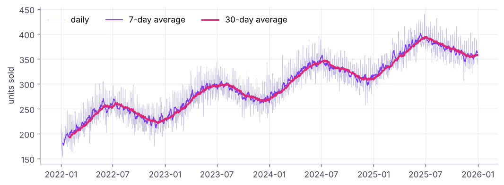

pandas IV: Dates, Time Series, Resampling and Rolling Windows
Work with time. Parse dates, extract parts with .dt, do date arithmetic, set a DatetimeIndex, resample to weeks, months and quarters, compute rolling and expanding windows, shifts and growth rates, and build a cohort-style monthly report with the daily sales data.
- Parse and format dates and extract year, month, weekday and quarter
- Do date arithmetic with Timedelta and DateOffset, including business days
- Resample time series and use rolling, expanding and exponentially weighted windows
- Compute period-over-period change, year-over-year growth and cumulative totals with shift, pct_change and cumsum
- Handle time zones and missing dates
Parsing dates
import pandas as pd, numpy as np
pd.set_option("display.max_columns", 20); pd.set_option("display.width", 160)
d = pd.to_datetime(pd.Series(["2025-01-15", "2025-03-01", "2025-12-31"]))
print(d.dt.year.tolist(), d.dt.month_name().tolist(), d.dt.day_name().tolist(), d.dt.quarter.tolist(), d.dt.isocalendar().week.tolist())
print(pd.to_datetime("05/01/2025", dayfirst=True).date(), pd.to_datetime("05/01/2025").date()) # 5 Jan vs 1 May!
print(pd.to_datetime("2025-01-15 14:30").strftime("%d %b %Y, %I:%M %p"), pd.Timestamp("2025-02-28").is_month_end)[2025, 2025, 2025] ['January', 'March', 'December'] ['Wednesday', 'Saturday', 'Wednesday'] [1, 1, 4] [3, 9, 1] 2025-01-05 2025-05-01 15 Jan 2025, 02:30 PM True
Indian and European data often write 05/01/2025 for 5 January. Pass dayfirst=True or, better, an explicit format="%d/%m/%Y". Check a few parsed values every time.
.dt accessor |
Gives |
|---|---|
.year, .month, .day, .hour |
Parts |
.day_name(), .month_name() |
Text names |
.dayofweek (Mon = 0), .quarter, .isocalendar().week |
Calendar positions |
.to_period("M"), .to_period("Q") |
Month / quarter periods |
.floor("D"), .normalize() |
Truncate time |
.is_month_end, .days_in_month |
Calendar flags |
Date arithmetic
s = pd.read_csv("superstore_sales.csv", parse_dates=["order_date", "ship_date"])
s["ship_days"] = (s["ship_date"] - s["order_date"]).dt.days
print(s.groupby("ship_mode")["ship_days"].agg(["mean", "max"]).round(1))
t = pd.Timestamp("2025-01-31")
print(t + pd.Timedelta(days=30), t + pd.DateOffset(months=1), t + pd.offsets.MonthEnd(1), t + pd.offsets.BDay(3))
print(np.busday_count("2025-10-01", "2025-11-01"), "working days in October 2025 (Mon–Fri)")
print(pd.date_range("2025-01-01", periods=4, freq="W-MON").date.tolist(), pd.date_range("2025-01-01", "2025-06-30", freq="QE").date.tolist())mean max ship_mode First Class 1.5 2 Same Day 0.0 0 Second Class 3.0 4 Standard Class 5.6 7 2025-03-02 00:00:00 2025-02-28 00:00:00 2025-02-28 00:00:00 2025-02-05 00:00:00 23 working days in October 2025 (Mon–Fri) [datetime.date(2025, 1, 6), datetime.date(2025, 1, 13), datetime.date(2025, 1, 20), datetime.date(2025, 1, 27)] [datetime.date(2025, 3, 31), datetime.date(2025, 6, 30)]
Timedelta adds exact durations; DateOffset and offsets follow the calendar (month ends, business days).
A time series with a DatetimeIndex
daily = pd.read_csv("daily_sales.csv", parse_dates=["date"]).set_index("date").sort_index()
print(daily.shape, daily.index.min().date(), "to", daily.index.max().date())
print(daily.loc["2023-03"].head(3)) # partial-string indexing: all of March 2023
print(daily.loc["2023-12-24":"2023-12-27"])
full = pd.date_range(daily.index.min(), daily.index.max(), freq="D")
print("missing days:", len(full.difference(daily.index)))(1461, 1) 2022-01-01 to 2025-12-31
units_sold
date
2023-03-01 260
2023-03-02 272
2023-03-03 234
units_sold
date
2023-12-24 343
2023-12-25 270
2023-12-26 232
2023-12-27 257
missing days: 0Resampling
resample is groupby for time: change the frequency and aggregate.
monthly = daily["units_sold"].resample("ME").sum()
print(monthly.head(4))
q = daily["units_sold"].resample("QE").agg(["sum", "mean", "max"]).round(1)
print(q.tail(4))
wk = daily["units_sold"].resample("W-SUN").sum()
print(wk.describe().round(0))
print(daily.groupby(daily.index.day_name())["units_sold"].mean().round(1).sort_values(ascending=False))date
2022-01-31 5998
2022-02-28 5797
2022-03-31 6756
2022-04-30 7156
Freq: ME, Name: units_sold, dtype: int64
sum mean max
date
2025-03-31 30462 338.5 405
2025-06-30 34592 380.1 440
2025-09-30 34786 378.1 432
2025-12-31 33080 359.6 415
count 210.0
mean 2073.0
std 391.0
min 420.0
25% 1766.0
50% 2073.0
75% 2362.0
max 2801.0
Name: units_sold, dtype: float64
date
Sunday 323.3
Saturday 320.4
Friday 289.5
Tuesday 288.6
Thursday 288.5
Monday 287.9
Wednesday 287.3
Name: units_sold, dtype: float64Frequencies: D day, W week, ME month end, MS month start, QE quarter, YE year, h hour, min minute.
Rolling and expanding windows
ts = daily["units_sold"]
df = pd.DataFrame({"units": ts, "ma_7": ts.rolling(7).mean(), "ma_30": ts.rolling(30).mean(), "ewm_14": ts.ewm(span=14).mean(),
"max_so_far": ts.expanding().max(), "cum_units": ts.cumsum()})
print(df.iloc[[0, 6, 29, 400, -1]].round(1))units ma_7 ma_30 ewm_14 max_so_far cum_units date 2022-01-01 202 NaN NaN 202.0 202.0 202 2022-01-07 154 181.1 NaN 176.0 218.0 1268 2022-01-30 239 198.0 193.7 203.2 246.0 5811 2023-02-05 273 252.6 244.1 251.9 305.0 93681 2025-12-31 351 362.6 357.9 359.0 440.0 435285

Shifts and growth
m = monthly.to_frame("units")
m["prev_month"] = m["units"].shift(1)
m["mom_%"] = (100 * m["units"].pct_change()).round(1)
m["yoy_%"] = (100 * m["units"].pct_change(12)).round(1) # same month last year
m["ytd"] = m.groupby(m.index.year)["units"].cumsum()
print(m.tail(4))
yr = daily["units_sold"].resample("YE").sum()
print(yr, (100 * yr.pct_change()).round(1).tolist())units prev_month mom_% yoy_% ytd date 2025-09-30 11071 11798.0 -6.2 12.3 99840 2025-10-31 11291 11071.0 2.0 15.3 111131 2025-11-30 10721 11291.0 -5.0 14.7 121852 2025-12-31 11068 10721.0 3.2 15.1 132920 date 2022-12-31 85031 2023-12-31 100536 2024-12-31 116798 2025-12-31 132920 Freq: YE-DEC, Name: units_sold, dtype: int64 [nan, 18.2, 16.2, 13.8]
shift(1) is SQL's LAG; shift(-1) is LEAD; pct_change(12) on monthly data is year-over-year growth.
Time zones
ts_utc = pd.Timestamp("2025-03-10 09:00", tz="UTC")
print(ts_utc.tz_convert("Asia/Kolkata"), ts_utc.tz_convert("America/New_York"))
naive = pd.Series(pd.to_datetime(["2025-03-10 09:00"]))
print(naive.dt.tz_localize("Asia/Kolkata").dt.tz_convert("UTC").tolist())2025-03-10 14:30:00+05:30 2025-03-10 05:00:00-04:00
[Timestamp('2025-03-10 03:30:00+0000', tz='UTC')]Store timestamps in UTC; convert to local time only for reporting.
Mini case: monthly KPI report
s["month"] = s["order_date"].dt.to_period("M")
kpi = s.groupby("month").agg(sales=("sales", "sum"), orders=("order_id", "nunique"), customers=("customer_id", "nunique"))
kpi["aov"] = (kpi.sales / kpi.orders).round(0)
kpi["sales_3m_avg"] = kpi.sales.rolling(3).mean().round(0)
kpi["yoy_%"] = (100 * kpi.sales.pct_change(12)).round(1)
print((kpi.tail(6).assign(sales=lambda d: (d.sales / 1e6).round(2), sales_3m_avg=lambda d: (d.sales_3m_avg / 1e6).round(2))))
first = s.groupby("customer_id")["order_date"].min().dt.to_period("M").rename("first_month")
s2 = s.join(first, on="customer_id")
new_vs_repeat = s2.assign(kind=np.where(s2.month == s2.first_month, "new", "repeat")).groupby(["month", "kind"])["customer_id"].nunique().unstack().tail(3)
print(new_vs_repeat)sales orders customers aov sales_3m_avg yoy_% month 2025-07 7.19 99 91 72627.0 5.86 49.2 2025-08 5.80 99 91 58608.0 5.65 0.8 2025-09 8.47 107 101 79141.0 7.15 58.9 2025-10 6.14 124 115 49518.0 6.80 -15.4 2025-11 10.28 152 139 67661.0 8.30 41.2 2025-12 7.65 134 121 57106.0 8.03 15.3 kind new repeat month 2025-10 8.0 107.0 2025-11 4.0 135.0 2025-12 5.0 116.0
Summary
- Parse with
pd.to_datetime(giveformatordayfirst); use.dtfor parts andto_periodfor months/quarters. Timedelta= exact duration;DateOffset/MonthEnd/BDay= calendar-aware moves;date_rangebuilds calendars.- A sorted
DatetimeIndexallows partial-string slicing (df.loc["2025-03"]) andresample. - Rolling, expanding and EWM windows smooth series;
shift= lag/lead,pct_change(n)= growth,cumsum= running totals. - Keep timestamps in UTC, check for missing dates, and convert for display.
1. What does daily.resample("ME").sum() produce?
2. Which gives year-over-year growth on monthly data?
3. shift(1) is equivalent to which SQL function?
shift(-1) is LEAD.4. How do you parse "05/01/2025" as 5 January?
5. What does ts.rolling(7).mean() give for the first 6 rows?
min_periods=1 to allow partial windows.6. What is the difference between Timedelta(days=30) and DateOffset(months=1) from 31 Jan?
(1) Which month had the highest total units? (2) Compute the 28-day rolling sum and its maximum. (3) Average units by weekday and month (a heatmap-ready pivot). (4) Year-over-year growth by quarter. (5) Flag days where units exceed the 30-day average by 50%.
Show solution
print(monthly.idxmax(), monthly.max())
print(ts.rolling(28).sum().max())
pv = daily.assign(wd=daily.index.day_name(), m=daily.index.month).pivot_table(index="wd", columns="m", values="units_sold", aggfunc="mean").round(0)
qq = ts.resample("QE").sum(); print((100 * qq.pct_change(4)).round(1).dropna())
spikes = daily[ts > 1.5 * ts.rolling(30).mean()]; print(len(spikes))Q: resample vs groupby?
resample is a time-based groupby on a DatetimeIndex that also creates empty periods; groupby with dt.to_period is similar but only returns periods present in the data.
Q: How do you compute a 7-day moving average in pandas and in SQL?
s.rolling(7).mean(); in SQL AVG(x) OVER (ORDER BY d ROWS BETWEEN 6 PRECEDING AND CURRENT ROW).
Q: How do you handle missing dates in a daily series?
Reindex to a full date_range, then decide: fill with 0 (no sales), forward-fill (stock levels), or interpolate (sensor readings).
Practise more online
Free, trusted places to test yourself on this topic. Links open the original site in a new tab.